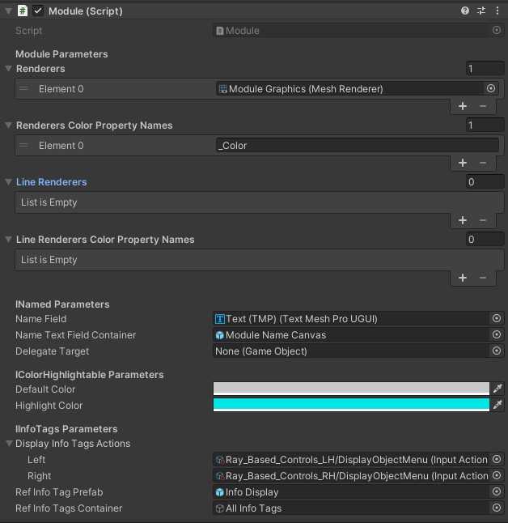

About Modules
Modules are be 3D interactable objects in ECellDive which encapsulate data or actions. They are the main mode of interaction for users to have an effect on the virtual environment of ECellEngine. Hence, general requirements about modules is to be able to receive input from user, to be moved around, to encapsulate data, or to encapsulate functions that the user can trigger.
Our approach is to use inheritance to define specific modules. Currently, there are two base classes that can be inherited that already implements the basics about interaction. The first one is Module and the second is GameNetModule.
Module or GameNetModule? That is the question.
The primary difference between the two is the Module is local while GameNetModule is synchronized over the multiplayer network. Hence, when making a new module, the first question to answer is whether every user in a session should see the module. For instance, when making a module to encapsulate data in which users can dive, it is likely that this must be shared on the network for every user to access the data and collaborate on it (so inherit from GameNetModule). However, if the purpose is to implement a module to modify the environment or the data, there might not be any reason to make an instance of the module accessible to every user(so inherit from Module). This is ultimately a design decision.
Modules that inherit from GameNetModule:
Those represent data. And every module that inherit from Module are:
GameNetModule's children must override 3 methods
Currently, GameNetModule inherits from the interface IDive as well as IMlprData which have methods that MUST be implemented by children.
For IDive it is GenerativeDiveInC. This coroutine is where the user must define what to generate in the new dive scene. This is specific to every "diveable" module so, of course, it must be defined.
For IMlprData, there are two methods, AssembleFragmentedData and RequestSourceDataGenerationServerRpc. The former's role is to reassemble network-synchronized data that has been imported by one the user in the multiplayer session and that was broadcasted (as fragments) to all other clients of the session. The later's role is to request the server to generate the representation of the data stored in the module. It will likely be called inside GenerativeDiveInC.
To enforce the implementation of GenerativeDiveInC andAssembleFragmentedData, the GameNetModule was marked as abstract and so were the two methods. However, it is not possible to do so for RequestSourceDataGenerationServerRpc as RPCs cannot be abstract. So developers must be vigilant to not forget it.
Examples (available in the assets)
The Unity project contains an example of basic setup for gameobjects (GOs) using the Module and GameNetModule components. Those are respectively called BaseModule and BaseGameNetModule. You can find them under Assets\Resources\Prefabs\Modules.
Both GOs have exactly the same structure:


Module Graphicshave the collider and renderer attached.Module Name Canvasis a container for the name of the module. It is a prefab you can find at the pathAssets\Resources\Prefabs\Modules\BaseModuleNameAll Info Tagsis a container for all the info tags that might be attached to the module. Despite the name, it is also used in other modules to contain any UI menu that can be associated to a module.Info Displayis a prefab that can be instantiated to create information labels associated to the module and which will haveAll Info Tagsas parent. This info display is just used for a reference; it is never used. It will be deactivated on module spawn to become invisible and it is never reactivated.
The are assigned similar textures and 3D models:

What really matters are their respective components.
The Module component shows in the Inspector as:

The GameNetModule component shows in the Inspector as:
The GameNetModule component is marked as abstract so it cannot directly be a component. That is why, we created DummyGameNetModule just for the purpose of demonstration of the component. It is in fact empty.
General workflow to create a new module
- We recommend to start by duplicating the
BaseModuleor theBaseGameNetModuleto have a working basis. - Create a new script following the naming convention
XXXModulesomewhere underAssets\Scripts\Modules. You may create a new folder if you think it's relevant.- If you are making a new locale module, then have your class inherit from Module. Alternatively, if you are making a new server action module to communicate with a
Kosmogora-likeserver, you can have your class inherit from HttpServerBaseModule which already inherits from Module (see also the next section about HTTP modules).
namespace ECellDive.Modules { /// <summary> /// DOC /// </summary> public class XXXModule : Module //add interfaces if needed { //The field of your class //The fields/properties of the interfaces (if any) //Unity's override methods (Start, Update, OnXXX,...) //The methods of you class in alphabetical order //The methods of the interfaces (if any) } }- If you are making a new multiplayer module, then have your class inherit from GameNetModule and implement the three mandatory methods.
namespace ECellDive.Modules { /// <summary> /// DOC /// </summary> public class XXXModule : GameNetModule //add interfaces if needed { //The field of your class //The fields/properties of the interfaces (if any) //Unity's overriden methods (Start, Update, OnXXX,...) //The methods of you class in alphabetical order //The methods of the interfaces with, at least, the following: #region - GameNetModule IDive Method - /// <inheritdoc/> public override IEnumerator GenerativeDiveInC() { //write how to generate the new dive scene and how you //want to "wait" (since this is a coroutine). //You might want to call RequestSourceDataGenerationServerRpc here. } #endregion #region - GameNetModule IMlprData Methods - /// <inheritdoc/> public override void AssembleFragmentedData() { //write how to assemble the fragmented data. //Assembling might be "easy" using ECellDive.Utility.ArrayManipulation.Assemble. //But you probably want to retrieve information from the //assembled data and assign it to your fields. } /// <inheritdoc/> [ServerRpc] public override void RequestSourceDataGenerationServerRpc(ulong _expeditorClientID) { //The code to be executed by the server to generate anything //related to the data associated to this GO. } #endregion } } - If you are making a new locale module, then have your class inherit from Module. Alternatively, if you are making a new server action module to communicate with a
- Add the new component to the GO of your module.
- Compare with the Module component or the DummyGameNetModule component to assign the correct values in the fields in the inspector.
- Remove the Module component or the DummyGameNetModule component.
- Adapt the 3D model and textures of your GO via the child
Module Graphics. - Add UI Menus if needed.
Modules to communicate with Kosmogora
Every module in ECellDive with the prefix HttpServer is a server action module that relies on HTTP requests and expect a Kosmogora-like server to implement these requests. In theory, some of the tasks performed remotely on a Kosmogora-like server could also be performed locally on the standalone VR device. Nonetheless, several reasons might motivate to perform them remotely including:
- Computational resources management. A standalone VR device already has its hands full with rendering ECellDive so delegating the work to remote computers avoid impacting the framerate at the cost of some latency.
- Reusing packages. Many scientific tools are implemented in Python or have a Python binding but not a C# binding.
- Modularity of the implementation of the tasks. Anyone can implement its own solution to a task (its own
Kosmogora-likeserver) and connect it with ECellDive as long as the interface of the HTTP request is respected.
HttpServerBaseModule
Currently, every HttpServerXXXModule in ECellDive inherits from HttpServerBaseModule which provides the basic utility to get which Kosmogora-like server is suitable for this module, to build URLs for HTTP requests, to send HTTP requests and store the result.
GetAvailableServers
HttpServerBaseModule is marked abstract (consequently, it cannot be attached to a GO) and has one abstract method (GetAvailableServers) that must be implemented by the derived classes. GetAvailableServers defers the responsibility to derived classes to find out which Kosmogora-like server is suitable to perform the tasks this module encapsulates. Typically, a HttpServerXXXModule implements GetAvailableServers as such:
protected override List<ServerData> GetAvailableServers()
{
return HttpNetPortal.Instance.GetModuleServers("HttpServerXXXModule");
}
The only exception is HttpServerAPICheckModule which returns null because it attempts to connect to any server in order to check the HTTP commands implemented by this server.
If the contacted server implements the required HTTP commands of, at least, one module in ECellDive, the server contact information is stored in the dictionary modulesServers in the singleton HttpNetPortal (hence, we use GetModuleServers in the code snippet above to retrieve this information).
Build URLs
HttpServerBaseModule exposes methods to its children to write the URLs sent in the HTTP requests. We can add pages:
string url = AddPagesToURL(new string[] { "page1", "page2" });
// url = "http://serverIP:port/page1/page2"
We can add one query to an existing URL:
string url = "http://serverIP:port/page1/page2"
url = AddQueryToURL(url, "query1", "param1", true);
// url = "http://serverIP:port/page1/page2?query1=param1"
url = AddQueryToURL(url, "query2", "param2");
// url = "http://serverIP:port/page1/page2?query1=param1#query2=param2"
Finally we can add multiple queries to an existing URL:
string url = "http://serverIP:port/page1/page2"
url = AddQueriesToURL(url,
new string[] { "query1", "query2" },
new string[] { "param1", "param2" });
// url = "http://serverIP:port/page1/page2?query1=param1#query2=param2"
Send HTTP requests and receive the result
HttpServerBaseModule exposes GetRequest(string uri) to wrap around Unity's UnityWebRequest.Get(uri). GetRequest is a coroutine that will wait until it hears back from the UnityWebRequest (with a time out of 10 seconds) and store the information about the request requestData. This data structure can be used to know whether the request has been processed and what is the result.
If the Kosmogora-like server sent back data, it is stored in the string encoding of a Json file requestData.requestText. Typically, the code to send a request to a Kosmogora-like server from a module deriving from HttpServerBaseModule looks like the following:
private string BuildURL(/*parameters?*/)
{
//Use AddPagesToURL, AddQueryToURL, and AddQueriesToURL to build the url of the request
return /*URL*/;
}
//This method is the public interface.
//Maybe called back after clicking a button in ECellDive's UI.
public void Request()
{
StartCoroutine(RequestC(/*parameters?*/));
}
private IEnumerator RequestC(/*parameters?*/)
{
string requestURL = BuildURL(/*parameters?*/);
StartCoroutine(GetRequest(requestURL));//GetRequest is inherited from HttpServerBaseModule
yield return new WaitUntil(isRequestProcessed);//isRequestProcessed is inherited from HttpServerBaseModule
if (requestData.requestSuccess)
{
//Parse the output text to Json
requestData.requestJObject = JObject.Parse(requestData.requestText);
//Process the Json data as needed
//Give feedback where relevant to show that it's a success
}
else
{
//Give feedback to the user to show that it's a failure.
}
}
Required HTTP API per module
The list of HTTP commands that an HttpServerXXXModule requires in a Kosmogora-like server is stored by each HttpServerXXXModule in the array implementedHttpAPI inherited from HttpServerBaseModule. We set the values from the Unity editor.
| Server Action Module | Values in implementedHttpAPI |
|---|---|
| HttpServerAPICheckModule | None |
| HttpServerFbaModule | solve |
| HttpServerImporterModule | list_models open_view |
| HttpServerInfoQueryModule | reaction_information |
| HttpServerModificationModule | list_user_model open_user_model save |
To check the API of a candidate Kosmogora-like server, HttpServerAPICheckModule sends the request http://serverIP:serverPort/apis and expects to get back a string encoding a JSON file with a list of names:
{
"apis":[
/*name of commands implemented by the server*/
]
}
Therefore, if a candidate Kosmogora-like returns a list containing the names in the table above, the corresponding module will be unlocked in ECellDive. For example, if the server returns [solve, list_models, reaction_information], then only HttpServerFbaModule and HttpServerInfoQueryModule will be accessible.
Note
Currently, HttpServerAPICheckModule performs a loose API check which only verifies that the command names above are present in the list that the candidate Kosmogora server sent. In the future, we will constrain the checking process by including unit tests of every commands with dummy parameters.